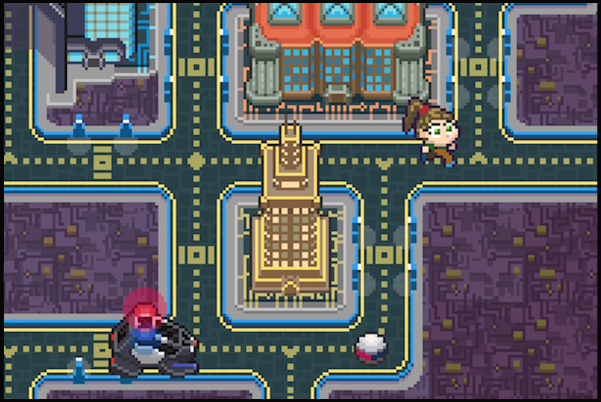
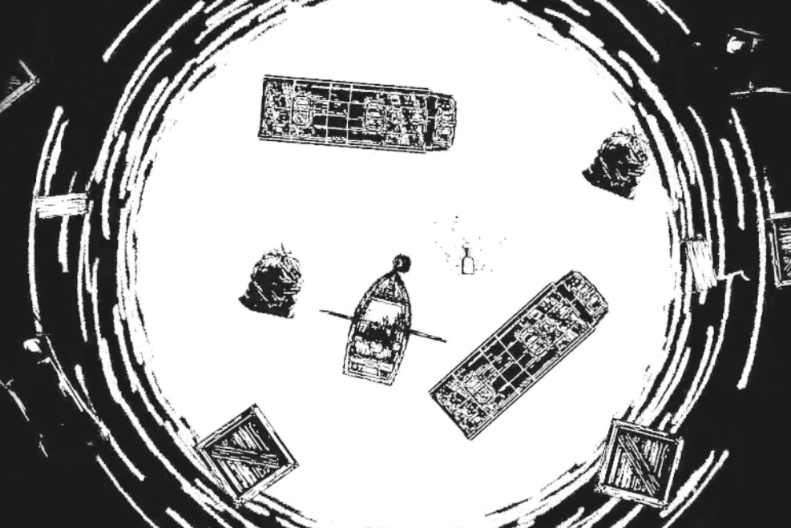

Infinite Red: The Day the Earth Stood Still
Mode Gone (2023)
Original sound design; UI and musical sounds based on '90s computer operating systems
[Play]

Resistor
Godot Wild Jam (2022)
Synthwave-inspired score and sound design for an arcade-style game jam project
(#1 in Audio category!)

Jaye and the Hungry Sea
Black & White Jam (2021)
Dark ambient soundtrack and sound design for narrative game jam project